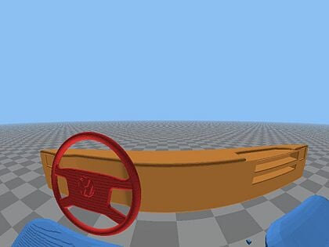
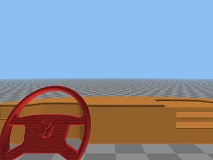
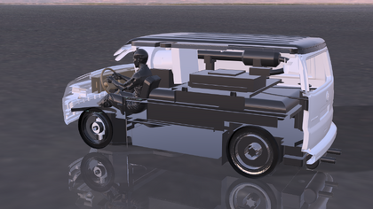
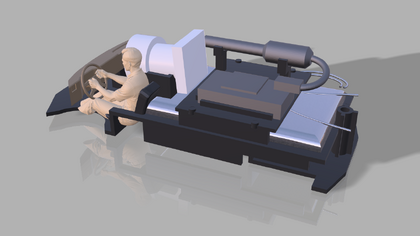

OmegaSim Wiki – die Idee dazu stammt von Gnen54. Hier stehen die offenen Artikel von Nutzer Luuke42 unter der Lizenz CC BY-SA 4.0.
Onboard-Kamera und Karosserien
Stand dieses Artikels: OmegaSim Testzweig „onboard“ (Basis 1.0.36) vom 21.10.2026 · Firmware des Autos: nicht bekannt (OmegaSim liest die Firmware-Version nicht aus)
Dieser Text wurde mithilfe von KI erstellt (Claude) und ist nicht in jedem Punkt von Menschen geprüft. Fehler bitte direkt verbessern oder auf der Diskussionsseite melden, siehe Mitmachen. Die öffentliche Fassung auf luuke42.github.io/omegasim kann älter sein als der hier beschriebene Stand.
Die Onboard-Kamera ist eine geplante Erweiterung für OmegaSim (in Arbeit): Eine kleine Funkkamera im Auto liefert ein Livebild aus der Fahrerperspektive, das OmegaSim als eigenen Cockpit-Schirm zeigt und als Streckenvideo aufnehmen kann. Dazu gehören 3D-gedruckte Karosserien für das Carrera HYBRID-Chassis, in denen die Kamera unsichtbar eingebaut ist, statt aufgeklebt zu werden. Diese Seite sammelt den Stand der Planung. Nichts davon ist fertig, Einzelheiten können sich noch ändern.


Onboard-Kamera in OmegaSim (in Arbeit)
Stand: Die App-Seite steckt als Versuch in einem eigenen Zweig und ist noch nicht in der Testfassung. Die Kamera ist da. Die Karosserien werden jetzt an ihre echten Maße angepasst; ein Test mit Kamera und Empfänger in OmegaSim steht noch aus.
Geplante Funktion
- Eigener Cockpit-Schirm „Onboard“ mit dem Livebild aus dem Auto
- Im Bild eingeblendet: Runde, aktuelle Rundenzeit, km/h, die Startampel und bei Gelber Flagge ein gelber Rahmen
- Aufnahme auf Knopfdruck („● Aufnahme“ im Onboard-Schirm oder Wähltaste X am Controller) oder automatisch für jedes Rennen
- Automatische Aufnahme vom Countdown bis 3 s nach dem Ziel. Ein abgebrochener Start wird verworfen, ein im Rennen abgebrochenes Rennen bleibt gespeichert.
- Video als MP4, wenn der Browser es kann, sonst WebM. 720 Zeilen und 30 Bilder/s, höchstens 15 Minuten am Stück.
- Speicherort: im Browser als Download, in der Android-App unter Filme/OmegaSim
- Für OmegaSim ist der Funkempfänger eine gewöhnliche Kamera. Zum Ausprobieren reicht daher auch eine Webcam.
Geplante Einstellungen
Unter Optionen → AddOn → Onboard-Kamera:
| Einstellung | Wirkung |
|---|---|
| „Einschalten“ | Onboard-Kamera an oder aus. Beim ersten Mal fragt der Browser nach der Kamera-Erlaubnis. |
| „Kamera“ | Welche Kamera gezeigt wird. Fehlt sie, erscheint „Kamera nicht gefunden“ statt still die Tablet-Kamera. |
| „Bild um 180° drehen“ | Für eine kopfüber eingebaute Kamera. Gilt auch für die Aufnahme. |
| „Beim Start Onboard-Bild zeigen“ (an) | Mit dem Countdown schaltet das Cockpit auf „Onboard“. |
| „Rennen automatisch aufnehmen“ | Nimmt jedes Rennen ohne Knopfdruck auf. |
Wo es laufen soll
| Gerät | Erwartung |
|---|---|
| PC, Mac, Chromebook mit Chrome oder Edge | sollte gehen |
| Android-Tablet mit Chrome | hängt vom Gerät ab: nur, wenn das Tablet USB-Kameras unterstützt |
| OmegaSim-App für Android | wie Chrome, braucht eine neue App-Fassung |
| iPhone / iPad | nein |
Weitere Ideen für die Software


Nach dem Datenblatt der Kamera (Weitwinkel 150°, analoges Bild, 40 Funkkanäle) sind diese Erweiterungen sinnvoll:
- Aufnahme in der Auflösung des Empfängers statt hochgerechnet auf 720 Zeilen. Ein analoger Empfänger liefert meist 640×480 oder 720×576.
- „Weitwinkel entzerren“ mit Zoom-Regler: Gerade Linien sind bei 150° stark gebogen; die Entzerrung gilt für Livebild und Aufnahme.
- Kanal je Auto: Jedem Auto wird ein Funkkanal zugeordnet, zum Beispiel R3 (5732 MHz). OmegaSim zeigt, welches LED-Muster an der Kamera dafür leuchten muss, und warnt, wenn zwei Autos denselben Kanal haben. Für mehrere Autos eignet sich das Raceband (R) mit bis zu 8 Autos.
- „Kein Signal“: Bricht das Funkbild ab, zeigt der Empfänger Rauschen oder einen blauen Schirm. OmegaSim erkennt das, blendet einen Hinweis ein und hält die automatische Aufnahme kurz an.
- Akku-Erinnerung: Der Kamera-Akku hält je nach Größe etwa 30–45 Minuten. Nach einer einstellbaren Zeit erinnert OmegaSim ans Laden.
Noch offen
- Test mit der echten Kamera und dem Empfänger
- Prüfen, welche Android-Tablets den Empfänger erkennen
- Im Training prüfen, ob das Auto mit dem Zusatzgewicht sauber fährt
Karosserien mit eingebauter Kamera (in Arbeit)
VW T1 „Bulli“
Der T1 war der erste Versuch ein Fahrzeug für die Onboard-Kamera zu erstellen. So war es geplant:
- Karosserie mit VW-Logos vorn und hinten und vorderer Stoßstange, passend auf das originale Porsche-Chassis
- Kamera in der Mitte hinter der geteilten Frontscheibe. Der Mittelsteg bleibt bewusst im Bild, wie beim Blick aus dem echten Bulli.
- Ein Lenkrad links, damit das Video wie vom Fahrersitz aus aufgenommen wirkt (siehe Innenraum)
- Abnehmbares Dach, mit Magneten gehalten. Darunter liegt die Technik; dort wird auch der Akku der Kamera über einen Stecker geladen.
- Optional ein höheres Dach als Zwischenstück, optisch wie beim Caravelle oder California, falls die Kamera mehr Höhe braucht
- Die Karosserie wird wie beim Original-Porsche vor der Vorderachse mit einer Schraube am Chassis befestigt
- LED-Scheinwerfer vorn und LED-Rücklichter mit Aussparungen in der Karosserie
- Lackierung im OmegaSim-Design mit Logo auf der Seite (Entwurf, siehe Bild)
Stand: Die Karosserie passt auf das Chassis. Offen sind die Magnete für das Dach, die Halter für Kamera und Sender, die LED-Beleuchtung und die Prüfung, ob die Vorderräder beim Lenken frei laufen. Die genaue Lage der Kamera wird jetzt nach den Maßen der echten Kamera festgelegt.
VW Caravelle / California 2011 (aktuelles Kamera-Fahrzeug)


Nach dem T1 ist jetzt ein VW-Bus der neueren Generation das Kamera-Fahrzeug: eine Caravelle im Stil des California 2011 im Maßstab 1:50 auf dem originalen Porsche-Chassis.
- Karosserie von Vehicle World (Cults3D), von Gnen54 an das Chassis angepasst. Vehicle World hat am 11.11.2026 erlaubt, die bearbeitete Karosserie mit der Carrera-Hybrid-Community für das Projekt Onboard-Kamera zu teilen. Vielen Dank dafür!
- Abnehmbares Hubdach wie beim Camper: Dach und Zwischenstück sind ein Teil und werden mit kleinen Magneten auf der Karosserie gehalten. Darunter liegt die ganze Technik.
- Innenraum-Modul als eine Einheit (Druck auf einem Prusa): Bodenplatte mit Sitzen, Armaturenbrett, Lenkrad, Fahrer, Kamera, Sender und Antenne.
- Akku flach und tief in einer Mulde der Bodenplatte, damit das Auto gut auf der Bahn liegt. Sender und Antenne sitzen auf einem abnehmbaren Träger darüber.
- Befestigung: vorn mit einer Schraube von unten, hinten mit einer Schraube von oben (bei abgenommenem Dach).
- Die Vorderräder wurden beim vollen Lenkeinschlag gegen die Bodenplatte geprüft.
Stand: Die Bodenplatte ist im Probedruck. Danach wird getestet, ob alles passt und wie das Auto mit dem Zusatzgewicht fährt. Der Funkempfänger für die Kamera fehlt noch.
Innenraum und Fenster


Für die aktuelle Version wurde ein Innenraum-Modul erstellt und mit der Karosserie abgestimmt.
Damit das Video wirklich wie aus dem Auto aussieht, bekommt das aktuelle Kamera-Fahrzeuge einen eigenen Innenraum:
- Sitze, Armaturenbrett und Lenkrad als eigene Druckteile, von gnen54 selbst konstruiert. Das Lenkrad sitzt links vor der Kamera, sodass es im Bild zu sehen ist wie beim Blick vom Fahrersitz.
- Fenster als eingesetzte Scheiben aus Klarharz statt offener Öffnungen. Wie man sie aus einer Karosserie erzeugt, steht unter Fenster aus Karosserie erzeugen.
- Bilder des ganzen Aufbaus siehe Abschnitt Caravelle oben.
Stand: Die Kamera ist da, Halter und Lage sind inzwischen an ihre echten Maße angepasst.
VW Käfer
- Zweifarbige Karosserie mit Streifen und sauberen Farbkanten für die Airbrush-Lackierung
- Befestigung mit Magnet über der Vorderachse (der Käfer sitzt auf einem gekürzten Chassis)
- Das Design der Karosserie ist fertig.
- Der Käfer ist das erste selbst gebaute Automodell im virtuellen Fahren: In einer Testfassung von Gnen54 lässt er sich schon fahren (Modell unter CC BY 4.0). Siehe Wunschliste.
Verworfene Fahrzeuge als Basis für die Onboard-Kamera
- VW Caddy als Pickup: zu wenig Platz für die Kamera
- ID.Buzz: Machbarkeitsstudie; die Frontscheibe ist zu flach für die Kamera
- T1 als Fahrzeug wegen schlechter 3D Qualität verworfen
Laden über Pogo-Kontakte (in Planung)
Die Grundidee, die Autos über Federkontakte zu laden, stammt von Jakob (Discord), der sie auf MakerWorld als „Carrera Hybrid Pogo Charging System“ veröffentlicht hat. Geplant ist hier eine eigene Umsetzung mit einer neu gestalteten Ladestation.
- Über Federkontakte (Pogo-Kontakte) wird der Fahrzeugakku geladen. Das Auto steht dazu auf der Ladestation; die Gegenkontakte sitzen im Diffusor am Heck.
- Die Ladestation passt in die Boxengasse. Eine USB-C-Ladebuchse am Auto ließe sich dort nicht so schön umsetzen.
- Die Ladestation dient zugleich als Teststand: Fahr- und Lenkfunktionen des Autos lassen sich dort prüfen.
- Ein Wagenheber (Hebel) an der Station hebt das Auto von den Kontakten ab. Ob das geht, wird noch geprüft.
- Steuerung mit einem Raspberry Pi Pico: Ein Pico soll mehrere Ladeplätze zugleich steuern. Er schaltet den Ladestrom erst ein, wenn das Auto richtig auf der Station steht.
- Der Diffusor hält hinten Karosserie und Chassis zusammen. Die Lösung braucht daher ein Fahrzeug mit genügend Überhang am Heck, zum Beispiel den Porsche 911. Beim VW Bus und beim Käfer ist der Überhang zu kurz.
Hinweise
- Diese Seite beschreibt nur geplante Funktionen und die Bedienung. Bauanleitungen und Teilelisten stehen nicht im Wiki.
- In Deutschland sind für Funkkameras auf 5,8 GHz höchstens 25 mW Sendeleistung erlaubt.
- Fragen und Ideen bitte an Gnen54.